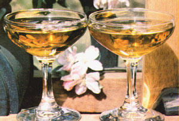

Create your own unique "vintage" of ...
In just a month or two, apple season will arrive . . . and if you live in-or plan to visitan area that's anywhere near a producing orchard, you'll soon have access to the incomparable taste of freshly pressed apple cider. Unfortunately, the pure flavor that most folks associate with unpasteurized juice doesn't linger long unless the drink is preserved in some way. However, if you can get your hands on a few gallons of fresh cider this fall, you could end up with a cellarful of delicious, sparkling "apple wine" . . . to enjoy all through the coming year.
The process of preparing homebrewed champagne cider is really quite simple . . . and you'll need only a few pieces of bottling equipment in addition to the "raw material". Once you've located a nearby source of unpasteurized cider, gather several gallon wine jugs, a plastic fermentation lock for each one, a case or two of empty champagne bottles, about 1-1/2 yards of 1/4" or 1/2" plastic tubing (or a siphon), a large wooden mallet, and some plastic champagne corks with wires.
IT'S EASY TO BREW . . .
When you purchase cider for "bubbly", try to find some that's been made from a variety of apples, including tart crab apples and mellow Delicious. I've found that a blend of flavors produces an especially full-bodied champagne. I also think that it's worth waiting for late-season pressings, because mature apples tend to yield a stronger beverage.
In preparation for your first batch of the sparkling nectar, it's best to buy only a small amount of juice . .. say, three gallons. That way, you can reserve one jug for drinking right away-as sweet, unfermented cider-and experiment with the other two. Transfer the fresh juice into clean gallon wine bottles and fit an airlock cork (see the manufacturer's instructions) snugly into the neck of each container. This arrangement will permit the gases produced during fermentation to escape without allowing outside air to enter . . . making sure that the natural sugars in the juice will turn into alcohol and not into vinegar!
Place the jugs on a level surface, and let them stand at room temperature-anywhere from 60 to 70 °F-for about a week and a half. After the first couple of days, you should notice a lot of bubbling action as COQ is released by the fermenting cider . . . and when that activity slows to about a bubble a minute, the process is finished. Remove the airlocks and close each jug with a solid cork until you're ready to bot tle the newly brewed potable .
. . . AND BOTTLE . . .
To "put up" the champagne, first collect the plastic tubing, champagne bottles, wires, corks, and mallet . . . and a few good friends, since half the fun of bottling your own bubbly is tasting and judging as you go.
Now, with the top of a bottle positioned at a lower level than is the bottom of the gallon jug, insert one end of the plastic tubing all the way down in the large container . . . suck a bit of cider through the tube . . . and quickly place the open end in the champagne bottle. Watch the process carefully, and when the liquid reaches a level about four inches from the top, move the tubing to another champagne bottle . . . and so on, until you've transferred almost all the cider out of the jug. A gallon of cider fills four or five champagne bottles. (You may want to save the last halfinch or so of murky liquid in the bottom of the jug for use in baking.)
Once all the bottles have been filled, the next step-which should be accomplished as soon as possible-is to fasten the plastic stoppers in place. You'll need a sturdy wooden mallet to hammer the corks down . . . and don't be afraid to tap them firmly into the neck of the bottle. Put a wire over each stopper and tighten it by rotating a pencil through the ends until the cork is securely bound .
. . . AND ENJOY!
Like any fine champagne, your sparkling cider should be stored in a cool, dark cellar. I like to use regular wine racks, or crates with inner separations, to prevent the bottles from breaking. If it's kept long enough, the apple drink will sometimes undergo a second fermentation, becoming drier and even more effervescent. No matter how eager you are, though, wait at least a few weeks before sampling your brew . . . in order to be sure that it's fully seasoned.
When you can't wait any longer to open a bottle, pry off its wire, put the container between your knees, and hold the palm of your hand firmly over the cork while easing it out with your other hand. Sometimes it may be necessary to use pliers to remove the stoppers, and you'll probably want to keep a large bowl handy during the "cork-popping" operation . . . in case the cider should effervesce a little too enthusiastically.
If you're satisfied with your taste test, the next time you feel like celebrating you can break out a bottle of your own champagne cider and drink to your guests with a glass of refreshing, natural "bubbly". I think you'll agree that a person doesn't have to be sipping an expensive French wine to make the familiar toast, a votre sante!
|
 |
|
|